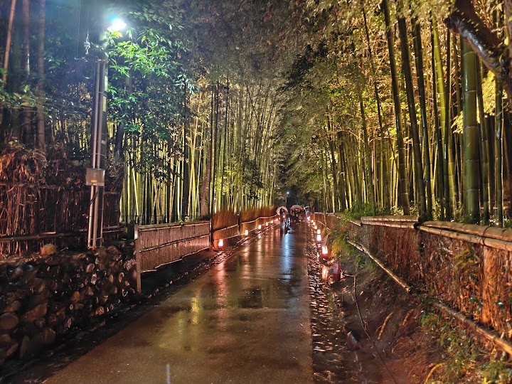
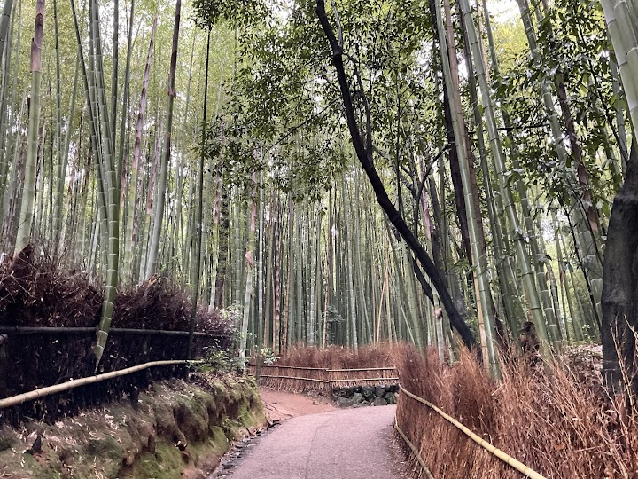
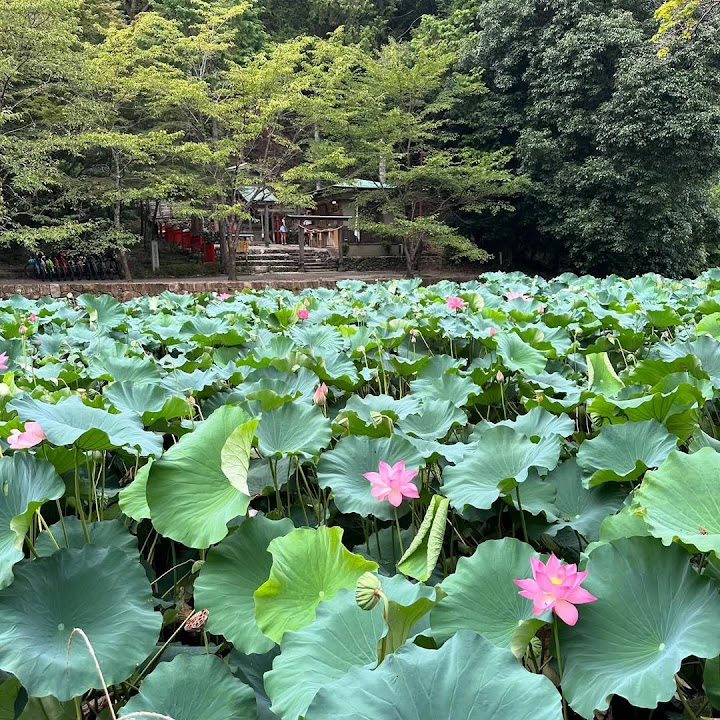
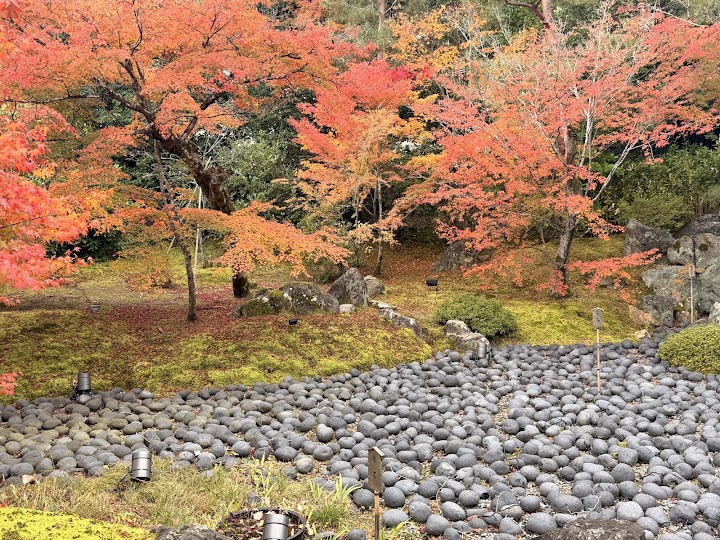
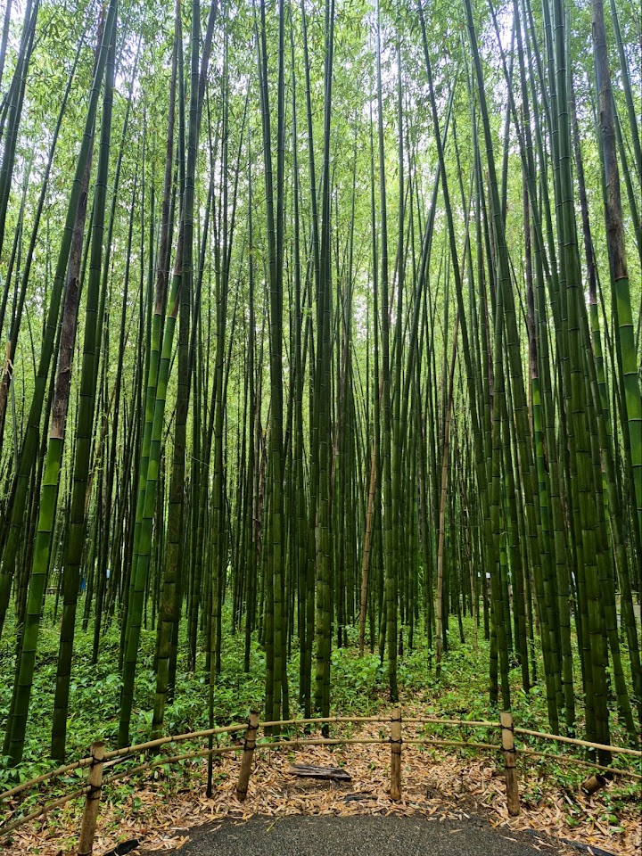

Arashiyama Bamboo Forest
A popular sightseeing path runs through a forest of towering bamboo stalks in Arashiyama, western Kyoto, with sunlight filtering through the green. It is peaceful early in the morning and gets very crowded later in the day.
Open in Google Maps (street view, more photos and reviews there)






Visitor tips on finding it and getting there
A quiet quaint area with the arashiyama mountains. It's beautiful. The bamboo forest is really nice. We took a hand rickshaw from the bridge which gave us an access to a private walk through the bamboo forest walk instead of the general crowded walk. Cost was 10000 yen for 30 mins for 2 people, 15000 yen for 45 minutes for 2 people. Try it. Our guy Keito who took us around could speak English and acted also as a guide and took fantastic photos of us. Lookout for him.
This was truly a beautiful place. We went on a Tuesday noon and while it was crowded, we still got to experience the magic of the forest and the nearby village. The bamboo forest itself is a short walk with opportunities for photos in every corner but we spent hours exploring the nearby village and basking in nature. It was peaceful and joyful and our family with grandparents and baby all had a great time. The bamboo forest and village is stroller friendly with the exception of temples that have stairs. There were many cute shops for souvenirs and food- make sure to bring cash as most vendors
Arashiyama Bamboo Grove is one of those places that feels almost surreal when you’re walking through it. The towering bamboo all around you creates a really unique atmosphere — calm, peaceful, and unlike anything else. It’s easy to see why it’s one of Kyoto’s most famous spots. That said, it can get very crowded. If you want to properly enjoy it (and actually hear the bamboo instead of hundreds of people talking), go early in the morning — it makes a huge difference. There’s no entry fee, which is great, and getting there is easy by train. While you’re there, check out the nearby train cros